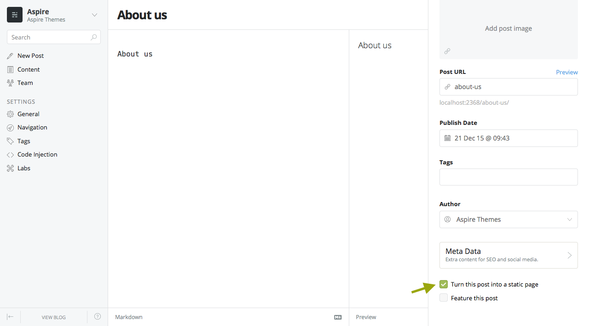
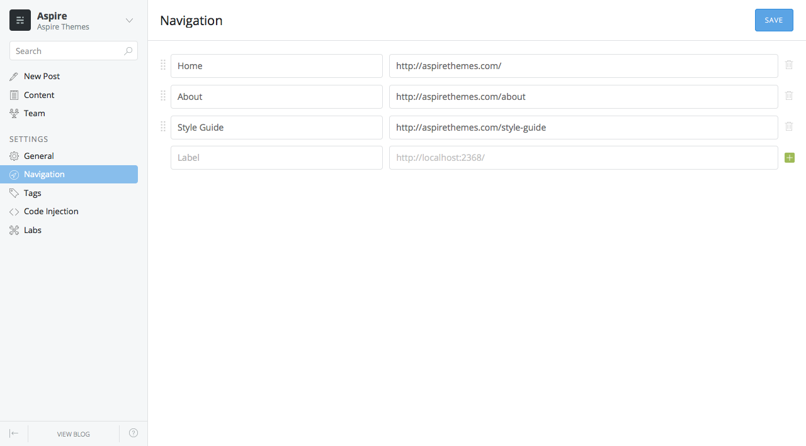
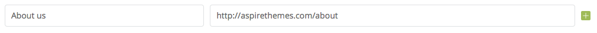
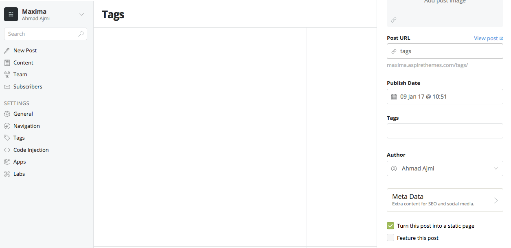

✋ For the most recent updated documentation, please check the online version 👉👉
Table of Contents
Theme Information
- Name: Bold - Ghost Theme
- Description: Blog and Magazine Clean Ghost Theme
- Current Version: 1.0.7
- Released: 30/7/2017
- Creator: aspirethemes.com
Theme Installation - top
- Log into the admin section of your Ghost blog yourblog.com/ghost.
- Select General from the left hand side of your admin area and scroll to the bottom Themes section.
- Click on the Upload a Theme green button.
- An upload box will open, then choose the theme (maxima.zip) within the downloaded package.
- Once uploaded, click on Activate now button to activate the theme immediately or Close if you want to activate it later.
Theme Features - top
Static Pages
In order to create a static page you create a new post, just like you would any other post. Once you have opened up the new post, there is a cog wheel icon next to where it says "Save Draft" or "Update Post" depending on if you have published the post or not. Click on that cog, and check the "Turn this post into a static page" box. This will convert your post to a static page.

Navigation
You can add, edit, delete and reorder menu links on your Ghost blog, directly from the navigation tool within the blog admin area, located at /ghost/settings/navigation/.

To include a static page on your navigation menu, first type the name of the page as you’d like it to appear on your menu in the label field.

Next, click inside the URL field of the menu item. The blog URL will auto-populate with http://yourdomain.com/. You will need to add in the page slug after the final /. Once satisfied with your page link, click the blue Save button to add the page to the navigation menu.
Disqus Comments
Bold Theme comes with Disqus commenting built-in, you just need to have a Disqus account (you can create it at Disqus.com). To enable commenting, open up partials folder (Bold/partials) and find the file disqus.hbs. Alter the line "disqus_shortname = 'my_disqus_shortname';" to match your Disqus account shortname.
If you wish to disable commenting, just remove all code from the file and save it.
Tags Page
To enable the tags page:
- Enable the Public API Beta.
- Create a new post and call it
Tagsfor example, and make sure that the POST URl istags. - Click the
Turn this post into a static pagecheckbox. - Publish the page.
- To add the page to the navigation, please check the Navigation section above.

Search
For the search to work properly, please enable the Public API Beta.
Google Analytics
To integrate Google Analytics, I would recommend reading How do I add Google Analytics to my blog? by Ghost.
Social Media Links
Social media icons are placed in:
Social media icons are placed in:
'partials/social-nav.hbs'
Ghost 0.8.0 supports adding Facebook and Twitter profile urls from the admin panel, go to **Settings > General** and add your URLs, and this will update the Facebook and Twitter URLs in the location mentioned above, other social media URLs you can add it from the file.
Here you can find a list of the social media icons:
-
Twitter:
<span data-icon="ei-sc-twitter" data-size="s"></span> -
Facebook:
<span data-icon="ei-sc-facebook" data-size="s"></span> -
Instagram:
<span data-icon="ei-sc-instagram" data-size="s"></span> -
Pinterest:
<span data-icon="ei-sc-pinterest" data-size="s"></span> -
Vimeo:
<span data-icon="ei-sc-vimeo" data-size="s"></span> -
Google-plus:
<span data-icon="ei-sc-google-plus" data-size="s"></span> -
Soundcloud:
<span data-icon="ei-sc-soundcloud" data-size="s"></span> -
Tumblr:
<span data-icon="ei-sc-tumblr" data-size="s"></span> -
Youtube:
<span data-icon="ei-sc-youtube" data-size="s"></span>
To add your URl to the links, just replace the {{! Add Twitter handle }}, for example with your username, and so on for other networks.
Bold is using Evil Icons, which are very simple and clean icons, and ther are different icons for different social networks.
Theme Development
Bold is using Gulp to compile Sass and JavaScript code. This improved the development flow, and making it faster
First make sure you have Node.js, npm and Bower installed then run the the following commands in the Bold theme directory to install npm dependencies.
npm install
To start Gulp, run:
gulp
This will compile Sass and JavaScript files, and start watching changes as you edit files.
Credits - top
We have used the following scripts, fonts or other files as listed.
- Evil Icons
- FitVids.js
- Preview Images form unsplash.com